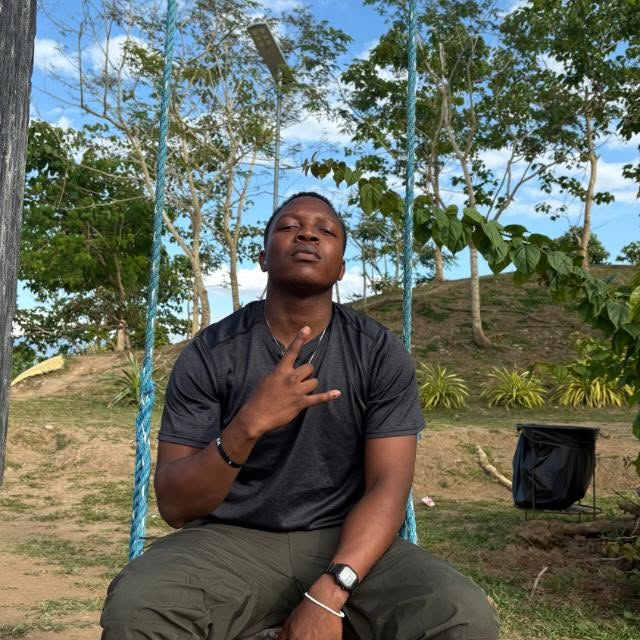

Musavengana Sungano Nyamakuti | WDD 130

Hello! My name is Musavengana Sungano Nyamakuti. I am from Bulawayo, Zimbabwe. I enjoy anything to do with computers and reading. Kind of a poet too. I really only write when I'm inspired so emotions like love, anger and envy usually exist to me when I'm semi-conscious. I am currently doing Web Development because it's the closest thing I get to feeling poetic. It is an absolute wonder, so it excites me to figure out what the future has in store for me. I served as a missionary for The Church of Jesus Christ of Latter-day Saints, spending my mission in the Philippines, where locals warmly bid me farewell ("Paalam") upon completing my service. I also maintain an active personal presence across networks like LinkedIn and Instagram under my full name. Stop praying for stuff...